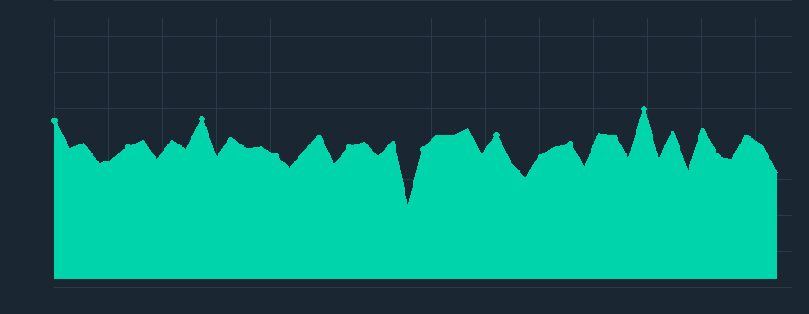

Manage and monitor all connected ESP32 sensor nodes. Click on a device for detailed information.
| ID | Name | Location | Firmware | IP | MAC | Uptime | Sensors | Status |
|---|---|---|---|---|---|---|---|---|
esp32-000 |
Sensor Node 1 | Kitchen | v2.3.15 |
192.168.1.100 |
98:ce:eb:91:fd:b9 |
199d 23h | pressure, motion, temperature, humidity | Online |
esp32-001 |
Sensor Node 2 | Attic | v2.4.7 |
192.168.1.101 |
34:39:13:7a:34:ef |
13d 23h | motion, humidity, light, temperature | Online |
esp32-002 |
Sensor Node 3 | Attic | v2.5.4 |
192.168.1.102 |
d7:bc:3f:df:39:a7 |
45d 20h | temperature, humidity | Online |
esp32-003 |
Sensor Node 4 | Living Room | v2.3.9 |
192.168.1.103 |
c2:38:e2:72:fb:65 |
345d 7h | temperature, humidity, motion, pressure | Offline |
esp32-004 |
Sensor Node 5 | Kitchen | v2.2.11 |
192.168.1.104 |
8f:91:93:fd:dd:92 |
190d 20h | light, pressure | Online |
esp32-005 |
Sensor Node 6 | Bedroom | v2.4.15 |
192.168.1.105 |
31:7f:2b:4a:a2:39 |
193d 20h | motion, temperature, humidity, light | Degraded |
esp32-006 |
Sensor Node 7 | Living Room | v2.6.6 |
192.168.1.106 |
0b:0b:1c:cd:32:9e |
329d 10h | light, motion, pressure, temperature, humidity | Degraded |
esp32-007 |
Sensor Node 8 | Office | v2.7.15 |
192.168.1.107 |
20:ae:5a:b6:85:56 |
269d 11h | pressure, humidity | Online |
esp32-008 |
Sensor Node 9 | Kitchen | v2.7.11 |
192.168.1.108 |
76:6f:d1:47:3f:00 |
91d 14h | humidity, light, temperature, pressure | Online |
esp32-009 |
Sensor Node 10 | Living Room | v2.8.7 |
192.168.1.109 |
4d:4a:23:19:17:34 |
80d 7h | humidity, pressure, light, motion | Online |
esp32-010 |
Sensor Node 11 | Attic | v2.4.8 |
192.168.1.110 |
62:61:d6:77:20:6f |
69d 21h | pressure, motion, light, humidity | Online |
esp32-011 |
Sensor Node 12 | Attic | v2.7.7 |
192.168.1.111 |
f9:48:22:06:e7:11 |
72d 4h | motion, light, pressure, temperature, humidity | Online |
